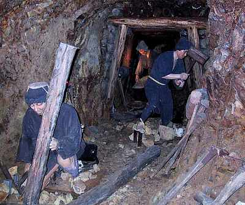
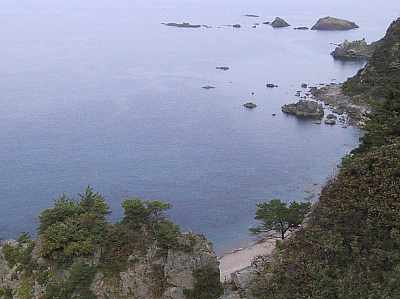

管理人の勝手なページ | 「佐渡ヶ島」 |
|  | ２０００年１０月７〜９日に友達と新潟の佐渡ヶ島に行って来ましたので、写真と合わせてご報告したいと思います。 思い立ったのは３日前。日本海を見たいな〜 ついでに佐渡に渡りたいな〜なんて思い、前日に宿などをとり金曜日の夜に出発。夜通し高速を走って、新潟の直江津港へ。最近は高速があるので、５時間半ぐらいで着きました。 ただ、フェリーが２時間半ぐらいかかってしまうので、たいへんです。 佐渡といえば金山！ 左の写真は平成１年まで発掘していた佐渡金山の展示場？ で昔の発掘風景を人形で展示してあります。この人形が動いて「手を休めるな！」などとしゃべるのです。リアルで結構怖いです。 この金山は徳川家康のころからやっていたらしく、徳川幕府の財源になっていたそうです。 |
日本海の荒波を目指して行ったのですが、海は荒れてなく穏やかでした。 しかも、すごい綺麗でした。右の写真を見ていただければ分かると思いますが、（天気が曇りのため発色が良くないのですが・・・）海が透き通っているのが見えますか？ 岩もごつごつしていてカッコイイです。写真を撮りたくなる風景ですよね。（天気が良ければもっと良かったのに・・・） 海の幸も豊富です。１泊目は国民宿舎「海府荘」に宿泊。ココの夕食がおいしかった。蟹が一人一杯（漢字これで良いのか？）ついてきて、焼き魚、お刺身、カキと大根おろしの鍋（これが旨い）魚の頭が入ったみそ汁、その他モロモロ。ビールも飲んでいい気分です〜♪ 部屋はそんなに良くないけど、それなりです。 二日目は、この宿の近辺の景観地を見て回りました。賽の河原って所もあり、お地蔵さんがたくさんありましたよ。 そうそう、佐渡には名産に「おけさ柿」があって、このシャーベット（単に凍らしてあるだけだとは思うが）がおいしいです。友人が「めかぶ丼」を食べてましたが、ねばねばしておいしかったそうです。 |  |
 | 左の写真は山奥で撮った写真です。佐渡は以外と山が多く、牛や狸がその辺にいます。 二日目の宿泊は民宿「いりふね荘」。 ココは、夕食はいたって普通。焼き魚にお総菜が何品か。魚の和え物が旨かった。この宿、宿泊客は私たちだけ、しかも婆さん一人できりもみしているらしい。そこまでは良いのだが、夕食時、朝食時共に、横に婆さんが付く。 自分のお茶をすすりながら、「静岡からね、静岡いいとこらしいね〜行ったことないけど」等とずっと話をしてくる。今日は町内の運動会で、町長さんが走ったなどと話は止まることがない。これはこれでおもしろかったが。 佐渡は酒の産地でもあるので、いろいろ日本酒を試飲し、味わっていました。トキもいるよ。見てこなかったけど・・・ 夏に行って泳ぐと良いのかもしれません。混むらしいけどね。ぜひ、行ってみてください。 |